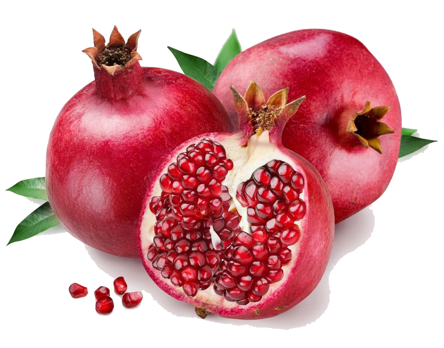
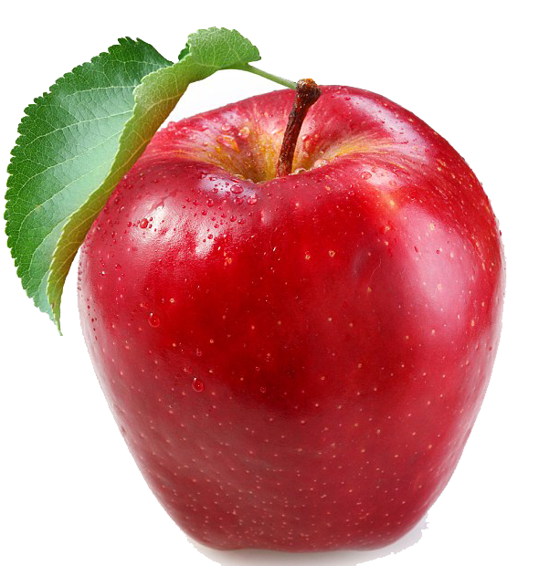

Strawberry fruits heap Isolated on white background

Strawberries are excellent sources of Vitamin C and if you grow different strains, they will produce fruit all summer. Put the small plants in during August and set them 30cm apart along the back or front of the VegTrug. This is the shallowest part of the VegTrug and they shouldn’t be planted too deep as the roots are shallow. Strawberries are excellent sources of Vitamin C and if you grow different strains, they will produce fruit all summer. Put the small plants in during August and set them 30cm apart along the back or front of the VegTrug. READ MORE
Health Benefits Of Pomegranate
Pomegranate – rubies in a shell or rubies for your health, there are several ways to describe this delectable fruit because of its health benefits. And a definite plus point to pomegranate's many health benefits is the fact that it is available all year round. However, many Pomegranate – rubies in a shell or rubies for your health, there are several ways to describe this delectable fruit because of its health benefits. And a definite plus point to pomegranate's many health benefits is the fact that it is available all year round. However, manyREAD MORE
How an apple a day really
Eating an apple a day does not actually keep the doctor away - but it might stop you going to your pharmacist. Researchers looked at data on 8,399 US adults and initially found evidence to support the proverb. They discovered that those who had one small apple a day had a nine per cent lower chance of visiting the doctor several times a year. However when they adjusted their statistics for other factors, their conclusions changed. The University of Michigan researchers adjusted for ways that ‘apple eaters might be very different from everyone else,’ such as how they were less likely to smoke and be more educated. READ MORE